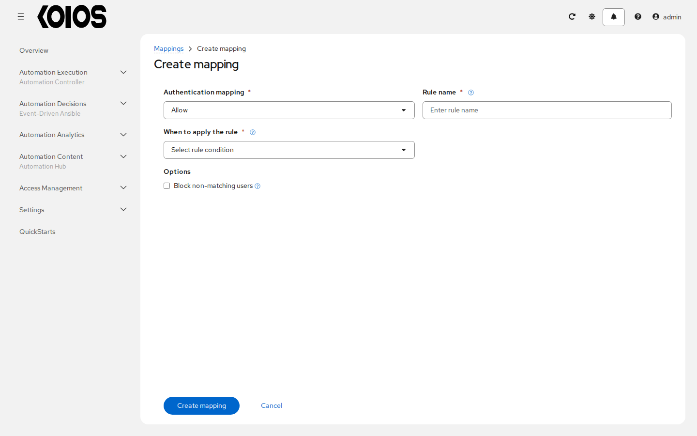

Mapping
Mapping rules decide, at every login through an authentication method, what the user is given: whether they may log in at all, which organizations and teams they belong to, which platform roles they hold, and whether they are a superuser. The rules use what the provider says about the user: their groups and their attributes.
Rules belong to an authentication method. Open the method, go to Mappings and click Create mapping.

What a rule grants
Authentication mapping sets the kind of rule:
Kind |
Grants |
|---|---|
Allow |
Permission to log in. |
Organization |
A role in an organization, such as Organization Member or Organization Admin. |
Team |
A role in a team of an organization, such as Team Member or Team Admin. |
Role |
A platform role: a system role such as Platform Auditor, or an organization or team role, with the organization and team it applies to. |
Superuser |
The superuser flag: full control of the platform. |
Organizations and teams are named, not selected, so a rule can name one that does not exist yet:
the method creates it at login when its Create objects option is on. Names can also come from
the user’s attributes, with {% for_attr_value(<attribute>) %}. For example, an organization named
{% for_attr_value(department) %} gives each user membership of the organization named after each
value of their department attribute.
When a rule applies
When to apply the rule sets the condition:
Always and Never.
Based on groups: the user is in at least one of the selected groups, or in all of them. Groups come from the provider: LDAP groups found by the group search, SAML groups from the attribute set as Groups, and OIDC, Keycloak and Azure AD groups from the Groups Claim.
Based on attributes: one or more conditions on the user’s attributes, joined so that at least one or all must hold. Each compares an Attribute with a Value using contains, matches (a regular expression), ends with, equals or in (one of a list of values).
How rules combine
At every login the gateway goes through the enabled rules of the method in their order, lowest first.
A rule whose condition holds grants what it says. Never takes it away.
A rule whose condition does not hold does nothing, unless Block non-matching users is on: then it takes away what it would grant. Use it so that leaving a group in the provider also removes the matching access in the platform.
When several rules decide the same thing, the last one wins.
Without any Allow rule, every user the provider accepts can log in. An Allow rule with Block non-matching users limits login to the users it matches.
Rules are evaluated when the user logs in, not on every request. Sessions and tokens created before a change at the provider (for example, removing the user from a group) keep the access they had until they expire or are revoked; delete them to cut access at once.
Rules that do not decide a role leave it as it is, unless the method has Remove users on (see Authentication methods).
Examples
Only members of koios-users may log in, and members of koios-admins are superusers:
Kind |
Condition |
Options |
|---|---|---|
Allow |
Based on groups: at least one of |
Block non-matching users |
Superuser |
Based on groups: at least one of |
Block non-matching users |
Everyone whose email ends with @example.com is a member of the organization Example, and the
members of an LDAP group administer its team Network:
Kind |
Condition |
Grants |
|---|---|---|
Organization |
Based on attributes: |
Organization Member of |
Team |
Based on groups: |
Team Admin of |
Checking the result
The gateway keeps the result of the last login of each user, per method, in the user’s API
record, /api/gateway/v1/users/<id>/, under last_login_results: whether access was allowed, and
the result of each rule, keyed by rule ID (true granted, false taken away, skipped or
invalid). Changes to the rules apply at the next login of each user.